Live
Live music photography is about capturing raw, unrepeatable energy. The challenge of low-light, high-contrast environments dictates a reactive, moment-driven approach. I rely on both zoom and fast prime lenses and often work with high-speed film stocks or high ISO settings to freeze the action while preserving the mood and atmosphere of the venue.
The collection below features work from shows across Berlin, including venues like BLO Ateliers and Reset Club. The goal is always to deliver images that feel authentic to the performance, connecting the viewer directly to the experience.


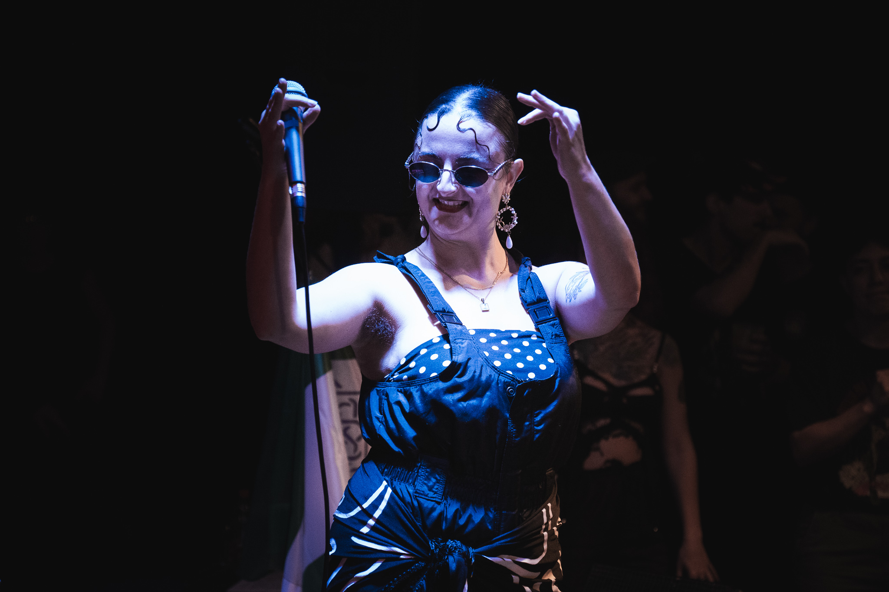


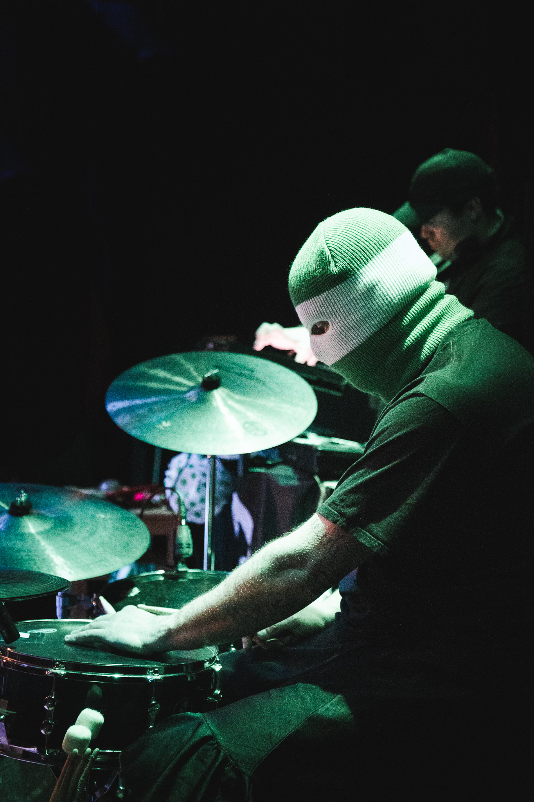

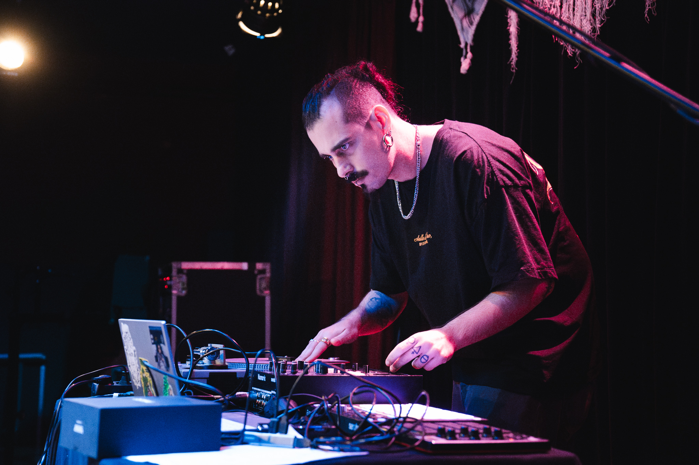


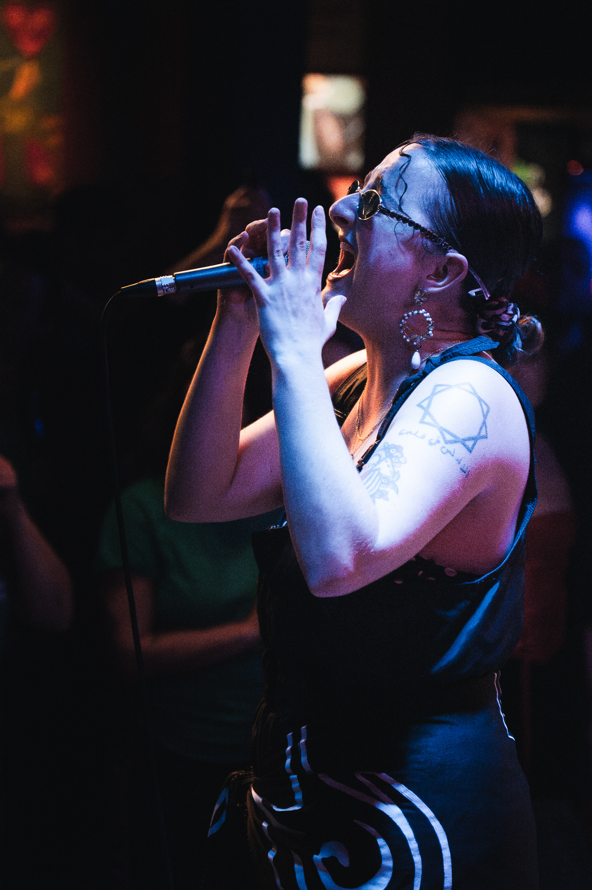


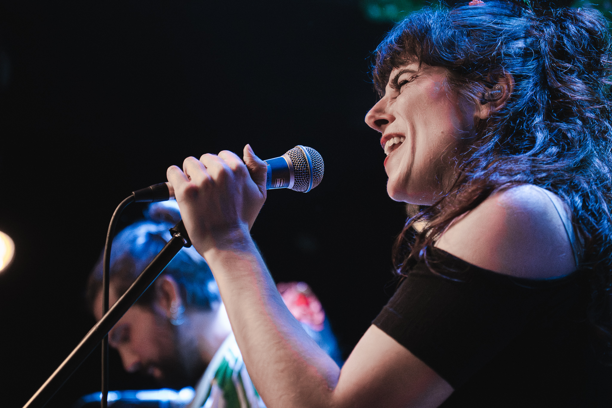


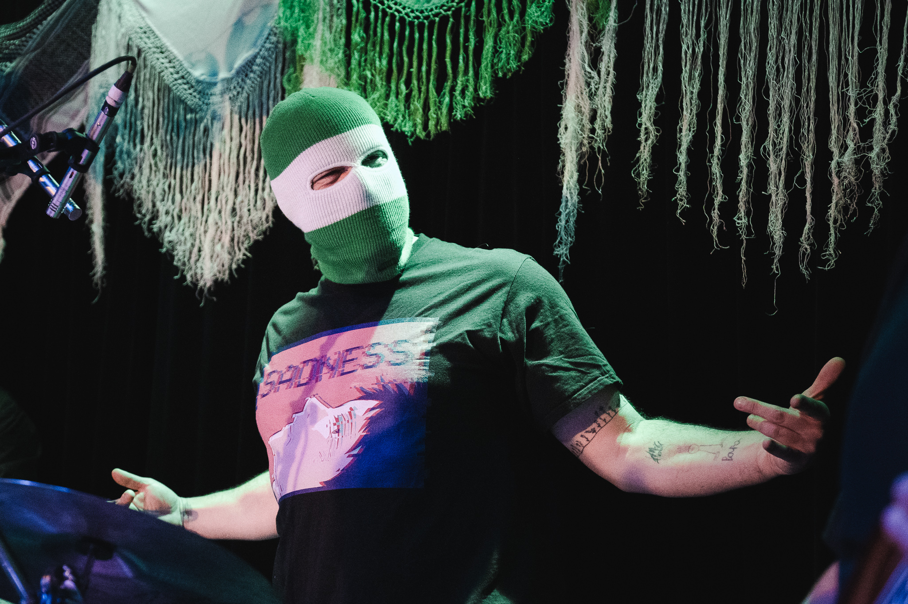


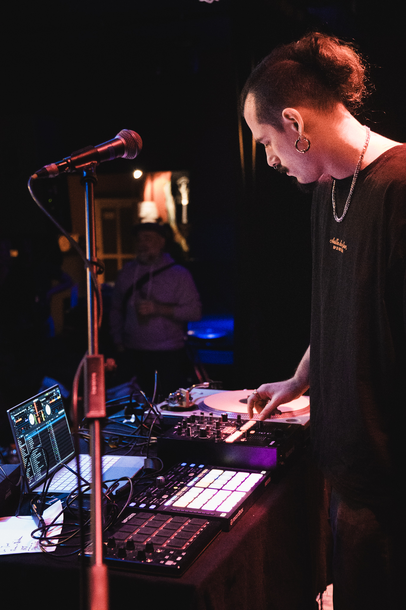


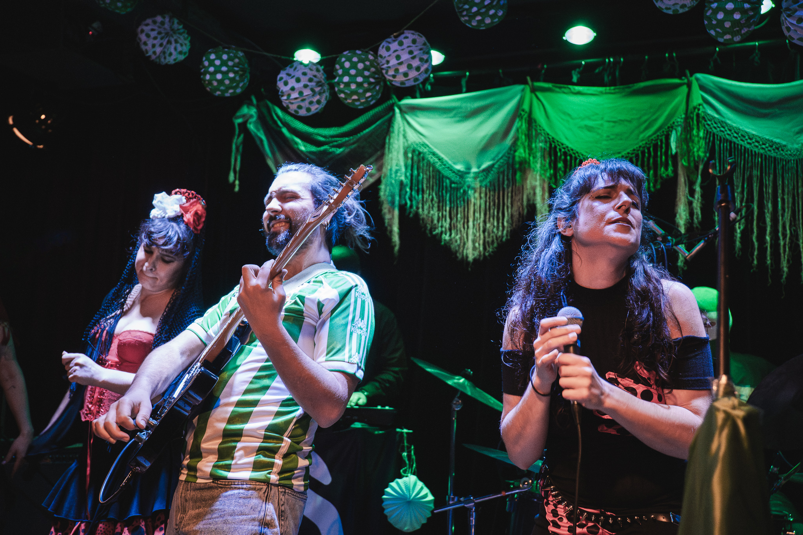


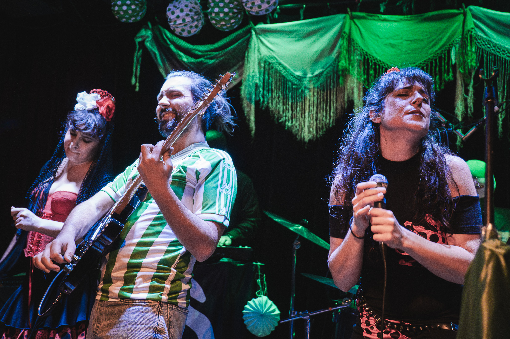


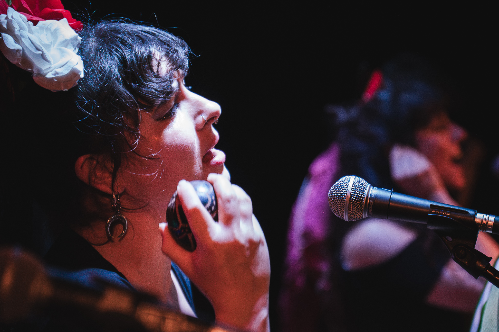


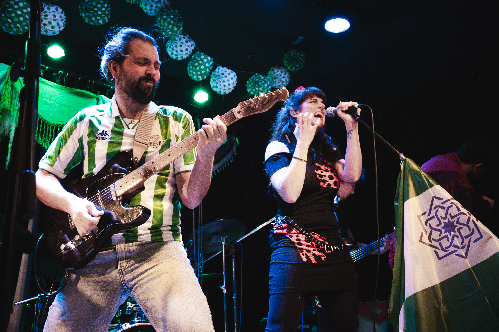


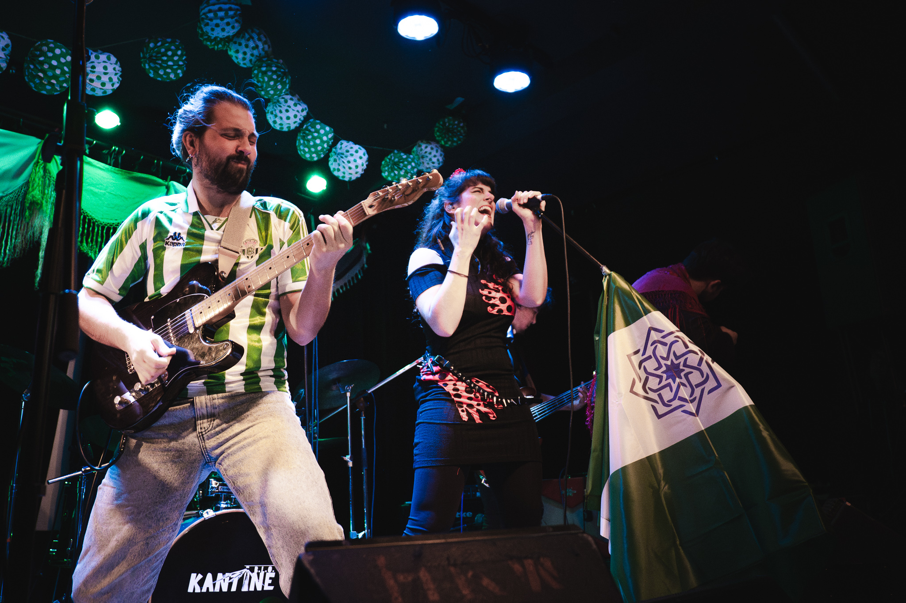